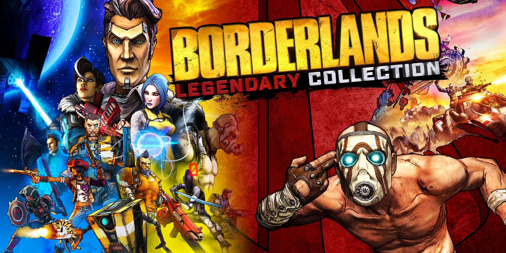

This is a page about my most favourite games that I myself love. I love playing many diffirent games but will always love these few here. Great games, I'd recommend.
| Game | Description |
|---|---|
| Skyrim is an open-world action role-playing video game. I like this game because there so much you can do and many options. Its main story focuses on the player's character, the Dragonborn, on their quest to defeat Alduin the World-Eater, a dragon who is prophesied to destroy the world. You can use magic and/or weapons and play the game how you want. |
| Valheim is an early access, indie survival game that's inspired by Viking culture. It's an open-world survival and crafting game with both single-player and co-op PvE mechanics. You can build cool building and be creative because this game offers a lot. Diffrent types of enemies and some exploration. All with a fun Viking theme. |
| Halo is set in the twenty-sixth century, with the player assuming the role of the Master Chief, a cybernetically enhanced supersoldier. The Chief is accompanied by Cortana, an artificial intelligence. Players battle aliens as they attempt to uncover the secrets of the eponymous Halo, a ring-shaped artificial world. There are a total of 16 games in the Halo series, of those games, eight are considered to be part of the main storyline. Halo is just a really good game to play with anyone because it has a great Co-op and PvP mode. |
|  | Borderlands is an open world action role-playing first-person looter shooter video game. The game's story focuses on a group of four "Vault Hunters", who travel to the distant planet of Pandora to search for the "Vault", which is rumored to contain advanced alien technology and other priceless riches. It's great art style and fun playstyle with multible characters to play as, it's easy to see why it's everyones favourite game. Although the new game (3) story is quite lackluster and the main antagonist is not that good compared to the previous games, it's still a very fun game. |